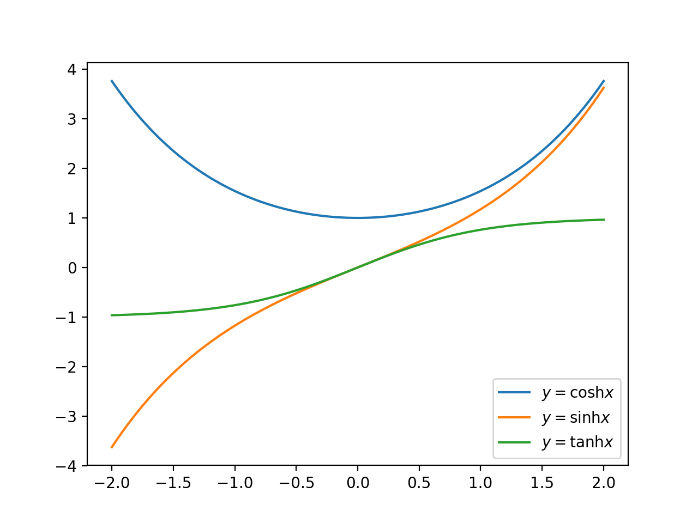

双曲線関数（hyperbolic）
定義
次のように定義される関数を双曲線関数という。
sinhx=ex−e−x2coshx=ex+e−x2tanhx=sinhxcoshx=ex−e−xex+e−x

性質
相互関係
微分
- (sinhx)′=coshx
- (coshx)′=sinhx
- (tanhx)′=1cosh2x
積分
- ∫sinhxdx=cosh+C
- ∫coshxdx=sinh+C
加法定理
- sinh(α±β)=sinhαcoshβ±coshαsinhβ
- cosh(α±β)=coshαsinhβ±sinhαcoshβ
- tanh(α±β)=tanhα±tanhβ1±tanhαtanhβ
逆関数
- x=sinhy ⇔ y=log(x+√x2+1)
- x=coshy ⇔ y=log(x±√x2−1)
積分への応用
√a2+x2 の形を含む積分は双曲線関数を利用した部分積分を用いることで計算できることが多い。
∫√a2+x2dx を解く。
x=asinht とすると、
∫√a2+x2dx=a2∫cosht⋅coshtdt=a2∫cosh2tdt=a22∫(1+cosh2t)dt=a22(t+12sinh2t)+C=a22(t+sinhtcosht)+C=a22sinh−1xa+x2√a2+x2+C=12{a2log(x+√a2+x2)+x√a2+x2}+C
同じく ∫1√a2+x2dx も x=asinht とすると、
∫1√a2+x2dx=∫1acoshtacoshtdt=t+C=log(xa+√x2a2+1)+C=log(x+√a2+x2)+C′
ソースコード
import numpy as np
import matplotlib.pyplot as plt
x = np.linspace(-2,2,200)
cosh = np.cosh(x)
sinh = np.sinh(x)
tanh = np.tanh(x)
plt.plot(x, cosh, label='$y=\\cosh x$')
plt.plot(x, sinh, label='$y=\\sinh x$')
plt.plot(x, tanh, label='$y=\\tanh x$')
plt.legend()
plt.show()